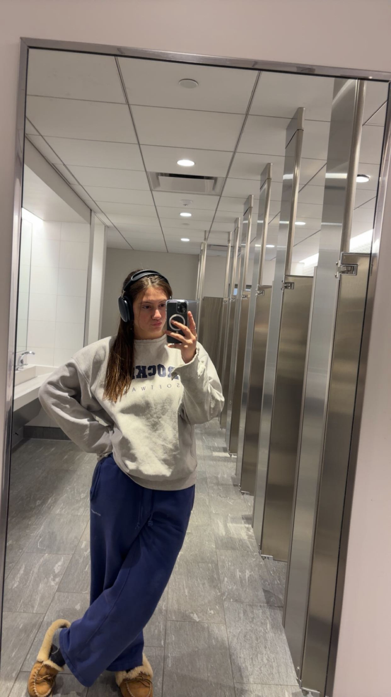

Hi! My name is Sabina Saxe and I am currently a third-year student at Northeastern University pursuing a bachelor’s degree in data science and biology. When I first came to college, I was undecided, and I had no idea what I wanted to study. I knew I liked math and science, so I took a wide variety of courses aligning with these interests. One of these introductory classes happened to be DS 2000, which is no longer offered (boooo), and I loved it! I decided after the first semester I wanted to major in data science, but I also wanted to find something that would satisfy my interest in science. I loved psychology in high school, but I knew I wouldn’t make much use of a psychology degree, so I thought that behavioral neuroscience would be a happy medium between my interest in science and psychology. After the fall of my freshman year, I declared a combined major in data science and behavioral neuroscience, which I was super excited about at first. Unfortunately, my excitement was short-lived when I took biological psychology the next semester and realized I didn't like learning about neurons. So, I decided to change to data science and biology, and here I am now, studying my life away in Snell Library most nights of the week. That is the story of how I came to be a data science & biology combined major!
